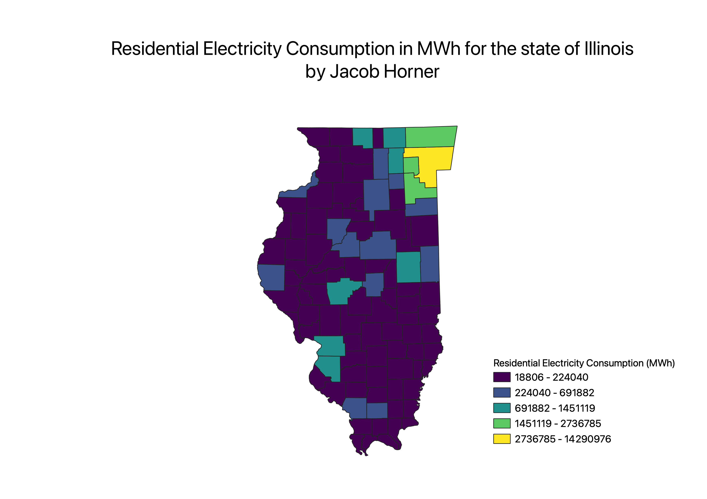

Homework 7
Jacob Horner
Choropleth of Residential Electricity Consumption (in MWh) in the state of Illinois

Discussion
This map details the resdiential consumption of electricity in MWh on a county by county basis in the state of illinois.
A MWh is a unit of power, which is energy over time. Cook County, the location of Chicago, is the 2nd most populous county in the country, and has the highest
level of consumption in the state of Illinois.
As an environmental science major with a concentration in renewable energy, I found this topic to be pertinent.
I wanted to model something related to my coursework involving energy and power.
Data used for this project
link
CSV dataset
Link to geojson
Data.gov link to where the data was obtained